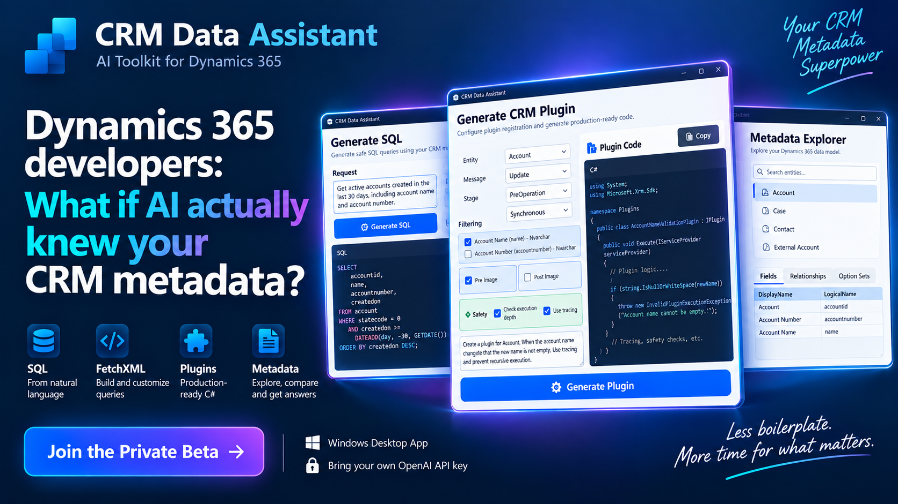
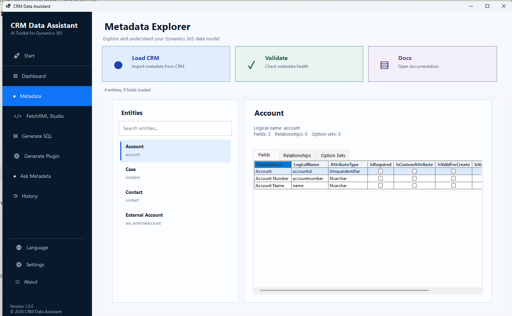
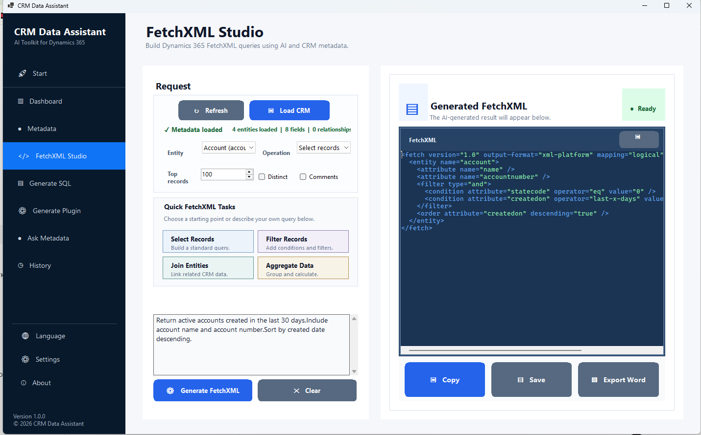
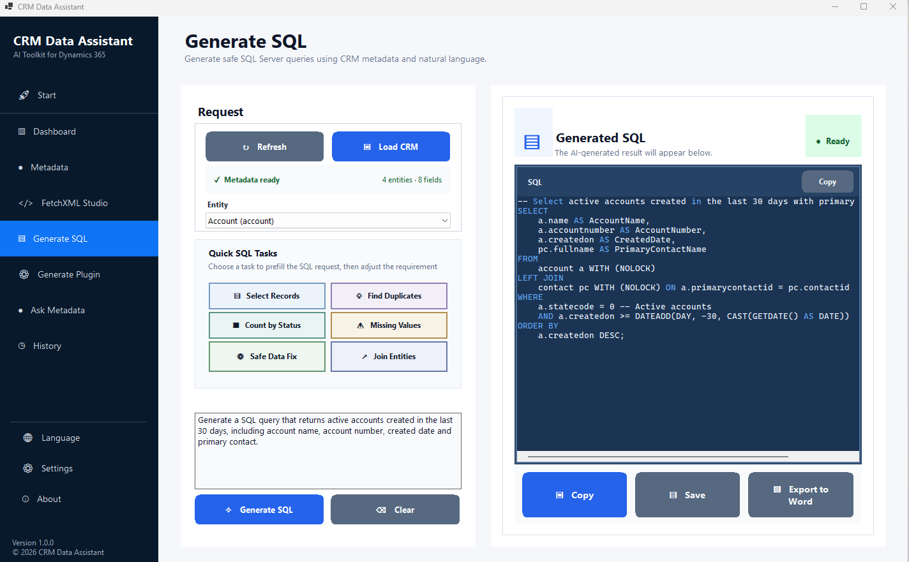
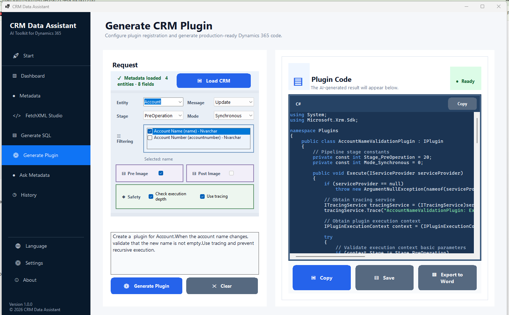

Metadata Explorer
Explore entities, fields, relationships and option sets from one place.
Turn natural-language requirements into CRM-aware FetchXML, SQL, C# plugins and developer assets using your actual CRM metadata.
Windows x64 · Bring Your Own OpenAI API Key · Developer-first workflow

CRM Data Assistant combines AI with entities, fields and relationships from your CRM metadata so output can be grounded in your environment.
Explore entities, fields, relationships and option sets from one place.
Describe the data you need and generate CRM-aware FetchXML.
Turn business requirements into SQL queries for CRM development tasks.
Configure the Dynamics pipeline and generate C# plugin code from requirements.
Generate JavaScript for Dynamics 365 command bar and ribbon scenarios.
Test cases, metadata comparison, Where Used, history, output and logs.
Connect your supported CRM metadata source.
Use plain English to explain what you need.
Create CRM-aware developer output.
You remain in control of the final implementation.
Browse entities and fields before asking AI to generate anything.

Turn a data requirement into a query grounded in CRM metadata.

Create SQL Server queries from business requirements and CRM context.

Choose entity, message, stage and safety options, then generate C# code.

The current beta uses your own OpenAI API key. A ChatGPT subscription is not required. Generated code and queries should always be reviewed and tested before production use.
✓ Windows 64-bit
✓ Your own OpenAI API key
✓ Supported CRM metadata SQL source
✓ Private beta access
Tell us a little about how you work with Dynamics 365. Early beta access is provided to selected participants.
The installer is not publicly distributed. Approved beta participants receive access instructions directly.